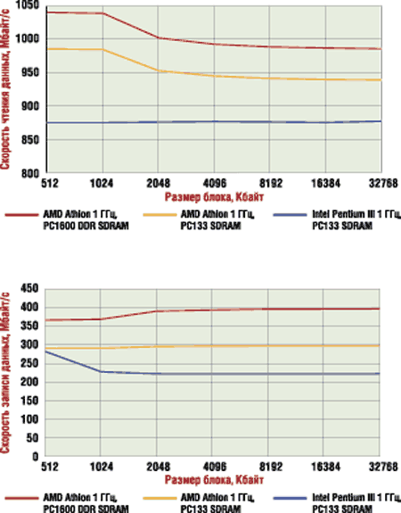
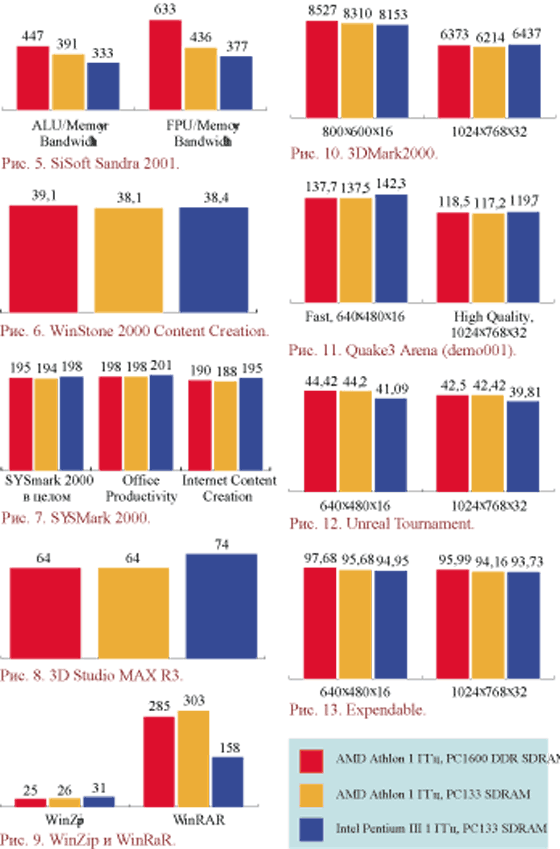

www.fcenter.ru
По мере увеличения скоростей, на которых работают современные процессоры, растет и поток данных, обеспечивающий процессоры работой. Однако стремительный прогресс в развитии ЦП и видеоакселераторов, к сожалению, не сопровождался таким же быстрым развитием устройств системной памяти. Все это привело к тому, что в современных системах шина памяти стала одним из основных узких мест, из-за которых дальнейшее увеличение быстродействия процессора не приводит к адекватному возрастанию производительности всей системы. Поэтому вопрос о переходе на новые типы памяти, обеспечивающие большую пропускную способность, встал в этом году с особой остротой. К тому же необходимо учитывать, что современные приложения, в частности, новейшие 3D-игры, требуют для своей работы все больше и больше данных, что накладывает дополнительную нагрузку на и без того перегруженную системную память.
В индустрии, разделившейся на два лагеря, было предложено два решения возникшей проблемы. Intel, скооперировавшись с Rambus, стала продвигать на рынок RDRAM, в то время как AMD, VIA и большинство производителей микросхем памяти сосредоточились на разработке DDR SDRAM.
Несмотря на то, что DDR SDRAM выходит на рынок более чем на полгода позже RDRAM, этот тип памяти представляется весьма перспективным. По крайней мере, большинство производителей микросхем и модулей памяти, системных плат и чипсетов уже объявили о поддержке DDR SDRAM. Нам удалось получить на тестирование одну из первых системных плат, работающих с DDR SDRAM, продажи которой ожидаются уже в начале декабря. Этой платой оказалась Iwill KA266-R, поддерживающая процессоры AMD Athlon/Duron в конструктиве Socket A и основанная на чипсете ALi MAGiK1.
DDR SDRAM
Прежде чем перейти к рассмотрению собственно системной платы, поговорим немного о технологии DDR (Double Data Rate) SDRAM. Если отбросить незначительные технические подробности, принципы функционирования DDR SDRAM предельно просты. Работая на частоте 100 или 133 МГц, обычная PC100/PC133 SDRAM память пересылает один 64-битный пакет данных на каждый такт. А DDR SDRAM осуществляет пересылку данных два раза за такт - по восходящему и нисходящему фронту стробирующего сигнала. Таким образом, скорость передачи данных DDR SDRAM превышает скорость передачи данных обычной SDRAM на тех же частотах ровно в два раза.
Как и у обычной SDRAM, текущая спецификация DDR SDRAM определяет два вида этой памяти: 200-мегагерцовую (100 МГц DDR) PC1600 SDRAM и 266-мегагерцовую (133 МГц DDR) PC2100 SDRAM. Ниже в таблице сведены характеристики основных присутствующих сейчас на рынке типов памяти.
Характеристики различных типов памяти |
| Память | Частота, МГц | Ширина шины, бит | Пропускная способность, Мбайт/с | Основные платформы |
| PC100 SDRAM | 100 | 64 | 800 | Pentium III (i440BX, VIA Apollo Pro 133A, i815) Athlon (AMD 750, VIA KT133) |
| PC133 SDRAM | 133 | 64 | 1064 | Pentium III (VIA Apollo Pro 133A, i815) Athlon (VIA KT133) |
| PC800 RDRAM | 800 | 16 | 1600 | Pentium III (i820) |
| Dual Channel PC800 RDRAM | 800 | 32 | 3200 | Pentium 4 (i850) |
| PC1600 DDR SDRAM | 200 | 64 | 1600 | Pentium III (VIA Apollo Pro266, ALi Aladdin Pro 5) Athlon (AMD 760, VIA KT266, ALi MAGiK 1) |
| PC2100 DDR SDRAM | 266 | 64 | 2128 | Pentium III (VIA Apollo Pro266, ALi Aladdin Pro 5) Athlon (AMD 760, VIA KT266, ALi MAGiK 1) |
Как следует из данных таблицы, наибольшей на сегодня пропускной способностью обладает двухканальная RDRAM, применяемая в системах на основе Pentium 4 и чипсета i850. Однако наилучшее соотношение цена/производительность - несомненно, у DDR SDRAM, которая должна стоить максимум на 25% дороже обычной SDRAM. К тому же, обладая более низкой латентностью, чем RDRAM, DDR SDRAM будет обеспечивать более высокую производительность в приложениях, не требующих потоковой передачи данных.
Что касается несколько странных названий DDR SDRAM (PC1600 и PC2100), тут следует дать пояснение. До этого память маркировалась в соответствии с частотой ее работы. Однако в случае с DDR SDRAM маркетологи приняли решение отказаться от старой системы наименования, так как цифры 200 и 266 в названиях DDR SDRAM на фоне PC800 RDRAM смотрелись бы немного несуразно. Поэтому в названии типов DDR SDRAM вместо частоты указывается пропускная способность (заметим, гораздо более впечатляющая цифра).
Изменился и внешний вид модулей: хотя размеры их остались теми же, число контактов на DDR SDRAM DIMM увеличилось до 184 (стандартные PC100/PC133 SDRAM DIMM имеют 168 контактов).

| Микросхемы памяти.
|
Новые микросхемы DDR SDRAM имеют и другое, слегка пониженное для уменьшения наводок, напряжение питания - 2,5 В против 3,3 В у обычных SDRAM модулей. Что же касается латентности, то она у DDR SDRAM практически такая же, как и у микросхем PC100/PC133 SDRAM и гораздо меньше, чем у модулей RDRAM.
Приверженцы RDRAM, ряды которых редеют с каждым днем, любят говорить о легкой наращиваемости архитектуры Rambus путем добавления дополнительных каналов как об одном из аргументов в пользу RDRAM. Кстати, именно такой подход и применен в системах на основе Pentium 4, где используется двухканальная RDRAM. Однако и DDR SDRAM в этом плане имеет перспективы; Правда, в данном случае рост пропускной способности шины памяти будет достигаться за счет увеличения частоты. В середине следующего года должна появиться 300 МГц DDR SDRAM, а позднее, в конце 2001 г., частота DDR SDRAM должна достигнуть 333 МГц. Основная проблема, с которой приходится бороться разработчикам модулей DDR SDRAM, - это влияние электромагнитного излучения, возникающего в системах со скоростной DDR SDRAM. Именно поэтому частоты применяемых в PC модулей DDR SDRAM оказываются гораздо ниже частот микросхем DDR SDRAM, применяемых, например, в графических картах. Там микросхемы памяти расположены к графическому процессору гораздо ближе и не объединяются в модули.
Тем не менее, в начале 2003 г. должна появиться память DDR-II, шина которой будет способна передавать по четыре пакета данных за такт, подобно Quad Pumped Bus чипсета i850.
ALi MAGiK 1
Чипсет ALi MAGiK 1 был анонсирован еще в июле 2000 г., однако первые массовые поставки этого набора логики производителям системных плат начались только сейчас. Тем не менее, этот набор микросхем стал первым серийно поставляющимся чипсетом с поддержкой DDR SDRAM для процессоров AMD Athlon/Duron (да и вообще первым). Начало массовых поставок AMD 760 ожидается только в декабре, а аналогичного решения от VIA, Apollo KT266, мы вообще в 2000 г. не увидим. Что же касается чипсетов с поддержкой DDR SDRAM для процессора Pentium III, то выход VIA Apollo Pro266 пока откладывается. Таким образом, компания Iwill, с самого начала начавшая тесно работать с ALi над созданием системной платы на базе ALi MAGiK 1, оказалась в выигрыше вдвойне: KA266-R станет не только первой системной платой на этом чипсете, но и, похоже, первой серийно продающейся платой с поддержкой DDR SDRAM вообще.
ALi MAGiK 1 имеет традиционную архитектуру и состоит из двух компонентов: северного моста M1647 и южного моста M1535D+. Они соединяются обычной шиной PCI, т. е. ALi пока не использует для этой цели более производительных шин - в отличие от Intel с хабовой архитектурой или VIA, использующей в новых чипсетах для связи мостов специальную шину V-Link.
 |  |
| Компоненты чипсета ALi MAGiK 1.
| |
Северный мост ALi MAGiK 1 поддерживает AGP 4x и системную шину EV6, работающую на частотах 200 и 266 МГц (рис. 1). Таким образом, платы на базе этого чипсета будут работать не только со старыми процессорами Athlon/Duron с частотой шины 200 МГц, но и с новыми Athlon с шиной 266 МГц.
 |
Рис. 1. Схема чипсета ALi MAGiK 1.
|
Что касается контроллера памяти, примененного в ALi MAGiK 1, то на нем следует остановиться особо. Контроллер памяти ALi MAGiK 1, поддерживая DDR SDRAM, к тому же обратно совместим со старой PC66/PC100/PC133 SDRAM. Однако поддержка того или иного типа памяти требует различного дизайна системных плат, поэтому платы на базе этого чипсета с поддержкой обычной SDRAM мы скорее всего не увидим. Контроллер памяти поддерживает до 3 Гбайт системной памяти и шесть банков. Таким образом, платы на базе ALi MAGiK 1 могут иметь до трех слотов DIMM для DDR SDRAM.
Еще одна особенность контроллера памяти этого чипсета - его асинхронность, т. е. возможность тактовать память на частоте, отличной от частоты работы системной шины. Однако, качественно реализовать асинхронность в случае DDR SDRAM оказалось достаточно сложно, поэтому в асинхронном режиме из-за задержек, связанных с различной частотой шин, производительность системы оказывается ниже, чем в синхронном. Поэтому большинство производителей не дает возможности использовать в своих системных платах асинхронный режим.
Южный мост, M1535D+, в отличие от северного, никакими интересными особенностями не выделяется и поддерживает два ATA-100 IDE-канала, шесть портов USB, AC97-звук и стандартный набор портов.
Плата
 |  |
| Системная плата Iwill KA266-R.
|
Итак, перейдем к рассмотрению собственно системной платы Iwill KA266-R, основанной на ALi MAGiK 1. Первым делом взглянем на ее спецификацию:
| Iwill KA266-R | |
|---|---|
| Процессоры | AMD Athlon/Duron |
| Чипсет | ALi MAGiK 1 |
| Частоты FSB, МГц | 100, 101, 102, 103, 105, 107, 110, 120, 126, 133, 136, 137, 140, 142, 146 |
| Функции для разгона | Изменение множителя |
| Память | Три 184-контактных DIMM-слота для DDR SDRAM |
| Слоты расширения (AGP/PCI/ISA/AMR) | 1/5/0/1 |
| Интегрированное видео | Нет |
| Интегрированный звук | C-Media CMI-8738 |
| Дополнительные возможности | ATA-100 RAID-контроллер AMI MG80649 |
| BIOS Award | BIOS v6.00PG |
| Форм-фактор | ATX, 305x244 мм |
Iwill KA266-R - это первая системная плата с поддержкой DDR SDRAM, поэтому основное, на что стоит обратить внимание при ее рассмотрении, - это три 184-контактных слота для DDR SDRAM, позволяющие установить до 3 Гбайт памяти. Плата поддерживает как PC1600, так и PC2100 DDR SDRAM, однако в силу того, что Iwill KA266-R не имеет возможности асинхронно тактовать шину памяти и процессора, при использовании AMD Duron или Athlon с частотой шины 200 МГц память всегда работает на частоте 200 МГц, а в случае AMD Athlon с шиной 266 МГц память также работает на 266 МГц и возможности использовать в системе PC1600 DDR SDRAM нет. Естественно, если в системе используются PC2100 и процессор с частотой шины 266 МГц, производительность оказывается выше.
Вплотную к слотам DIMM расположен процессорный разъем. С одной стороны, таким образом Iwill несколько уменьшила размеры PCB, благодаря чему KA266-R комфортно ощущает себя в любом ATX-корпусе, однако, с другой стороны, могут быть проблемы с установкой некоторых кулеров с массивным креплением. Тем не менее, отметим, что популярные Chrome Orb и Super Orb можно установить на эту плату, хотя конденсаторы над Socket A и располагаются достаточно близко к процессорному разъему.
На Iwill KA266-R имеется универсальный слот AGP, допускающий использование графических плат AGP 2x и 4x, пять слотов PCI и слот AMR, предназначенный для установки дешевых программных модемов или аудиоплат, что может быть актуально для сборщиков компьютеров. Несмотря на то, что многие производители в последнее время предпочитают устанавливать на свои платы слот AGP Pro, Iwill решила обойтись AGP 4x. Это решение выглядит достаточно логичным: AGP Pro требует дополнительного питания, а платы для него можно перечесть по пальцам. Полноразмерные платы PCI можно установить только в два из пяти имеющихся слотов, так как на переднем краю KA266-R расположены коннекторы для подключения светодиодов и кнопок корпуса, а также разъем для подключения инфракрасного порта.
Кстати сказать, на левом краю платы достаточно места для размещения еще одного слота, однако Iwill по каким-то причинам отказалась от установки шестого слота PCI. Слот же ISA, по-видимому, было решено не делать, так как его реализация на плате с чипсетом ALi MAGiK 1 требует применения дополнительного чипа PCI-ISA bridge, что привело бы к увеличению размера PCB.
В целом компоновка Iwill KA266-R не совсем удачна. Возможно, разработчики стремились снабдить свой продукт максимумом функций, однако факт остается фактом. Разъем для подключения ATX-питания находится в верхней части платы, в результате чего при сборке платы в корпусе кабель питания будет нависать над процессором и памятью, затрудняя охлаждение. Кроме того, расположение разъема для подключения дисковода в левом нижнем углу платы приводит к тому, что FDD-кабель тянется через весь корпус, затрудняя доступ к компонентам системы и ухудшая вентиляцию PCI и AGP плат. Зато удачным оказалось решение расположить AMR-слот самым первым; благодаря этому слот AGP несколько удален от разъемов для DIMM, и поэтому в Iwill KA266-R нет достаточно часто встречающейся проблемы - невозможности установки или изъятия модулей памяти при установленной видеоплате.
Поскольку Iwill KA266-R - плата не из дешевых (ее розничная цена будет около 190 долл.), Iwill реализовала в ней несколько дополнительных возможностей, рассчитанных на продвинутых пользователей.
Во-первых, на KA266-R интегрирован ATA-100 IDE RAID-контроллер AMI MG80649 (в действительности это перемаркированный контроллер CMD 649). Таким образом, рассматриваемая плата имеет четыре IDE-канала, поддерживающие протокол ATA-100. При этом жесткие диски, подключаемые к паре каналов, относящихся к дополнительному контроллеру, могут объединяться в RAID-массивы уровня 0, 1 или 0+1. Кстати сказать, для пользователей, не желающих переплачивать за наличие на плате микросхемы RAID-контроллера, Iwill будет выпускать специальную модификацию платы KA266 без RAID-контроллера, стоящую примерно на 20 долл. дешевле.
 |  |
| RAID-контроллер AMI MG80649, интегрированный на плате Iwill KA266-R.
|
Интегрированный звуковой контроллер C-media CMI-8738.
|
Вторая особенность, подчеркивающая, что плата предназначена для производительных ПК, - наличие интегрированного полноценного аппаратного PCI звукового контроллера C-media CMI-8738. Он, несомненно, обеспечивает гораздо лучшее качество звучания, чем устанавливаемые обычно производителями системных плат программные AC97-кодеки, и к тому же практически не загружает процессор при проигрывании звука. Более того, поскольку чип C-media CMI-8738 поддерживает выход на пятикомпонентные акустические системы и 3D-звук, большинство пользователей должны быть удовлетворены возможностями и качеством интегрированного звукового контроллера. Однако для тех, кто предпочитает проверенный временем Sound Blaster Live! или другие звуковые адаптеры, интегрированный звук на плате можно аппаратно отключить специальной перемычкой.
BIOS Iwill KA266-R выполнен на основе популярного Award Modular 6.00PG BIOS. Среди особенностей BIOS Setup следует отметить настройки, относящиеся к конфигурированию DDR SDRAM памяти (рис. 2).
 | Рис. 2. Настройки BIOS, относящиеся к конфигурированию DDR SDRAM памяти.
|
Кроме того, BIOS системной платы позволяет вручную распределять прерывания по слотам PCI, что удобно при разрешении конфликтов между устройствами. В BIOS также имеется возможность принудительного изменения частоты FSB, однако в этой плате Iwill не применила свою технологию MicroStepping, известную по другим платам, в результате чего набор допустимых значений крайне невелик.
Следует отметить, что IDE RAID-контроллер, имеющийся на Iwill KA266-R, имеет собственную BIOS, через которую создаются и конфигурируются дисковые массивы.
Имеется и аппаратный мониторинг, работу которого обеспечивает внешний контроллер ALi M5879. Плата поддерживает два температурных сенсора. Данные о температуре процессора снимаются с датчика, установленного в центре Socket A, а следовательно, относительно далеки от реальной температуры процессора. Второй же датчик расположен в левом верхнем углу платы. Можно измерять четыре напряжения. На плате имеются три коннектора для подключения кулеров; обороты двух из них можно контролировать.
И в заключение - о паре приятных мелочей, скорее влияющих на внешний вид платы, чем несущих функциональную нагрузку. Во-первых, нельзя обойти вниманием оригинальный блестящий радиатор с нанесенной на нем надписью Powered By DDR, установленный на чипсете и придающий плате стильный внешний вид. Во-вторых, на левом краю платы имеется миниатюрный зеленый светодиод, сигнализирующий о том, что плата включена.
 |
Радиатор на плате Iwill KA266-R.
|
Разгон и тестирование
Разгон
Если сравнивать возможности разгона процессора, которые предоставляет плата Iwill KA266-R, с аналогичными функциями, реализованными в предыдущих платах Iwill, то мы должны отметить, что производитель сделал некоторый шаг вперед. Если Iwill KV200-R позволяла только изменять частоту FSB, то рассматриваемая новинка позволяет устанавливать и коэффициент умножения процессора.
Системная шина EV6, применяемая в системах конструктива Socket A, не относится к числу дружественных оверклокингу. Даже небольшое отклонение частоты шины от номинальной приводило к нестабильности или неработоспособности системы. Однако теперь ситуация несколько изменилась. Чипсет ALi MAGiK 1, на котором построена Iwill KA266-R, официально поддерживает шину 266 МГц. Это значит, что при повышении частоты FSB со 100 до 133 МГц для процессоров с частотой шины 200 МГц проблемы могут возникать только со стороны процессора. Таким образом, теперь разгон шины может приобрести некоторый смысл.
Чтобы проверить это, мы попробовали разогнать частотой шины процессор AMD Duron 650 на двух платах - ABIT KT7 (основанной на чипсете VIA Apollo KT133) и на рассматриваемой Iwill KA266-R. Результат подтвердил наше предположение. Если на первой плате испытуемый процессор смог достичь только частоты 715 МГц (частота FSB 110 МГц), то Iwill KA266-R позволила довести частоту до 819 МГц (частота FSB 126 МГц). Таким образом, на Iwill KA266-R пренебрегать разгоном системной шины уже не следует: его результаты могут оказаться достаточно неплохими. Однако, в отличие от своей предыдущей платы, KV200-R, в KA266-R Iwill почему-то отказалась от возможности наращивания частоты FSB с шагом 1 МГц. В BIOS Setup этой платы присутствует всего пятнадцать значений частоты FSB, которые можно установить: 100, 101, 102, 103, 105, 107, 110, 120, 126, 133, 136, 137, 140, 142, 146 МГц.
Вернемся к традиционному разгону путем изменения коэффициента умножения. К счастью, Iwill KA266-R позволяет изменять его для процессоров с разблокированным множителем. Правда, делается это не совсем удобно - при помощи четырех джамперов, однако это все же лучше, чем ничего.
 |
Коэффициент умножения можно изменять при помощи джамперов.
|
К сожалению, Iwill KA266-R не располагает никакими средствами для изменения напряжения питания процессора и схем ввода-вывода, поэтому экстремальный разгон на этой плате несколько затруднен.
Как мы тестировали
Поскольку Iwill KA266-R - это первая системная плата с поддержкой DDR SDRAM, побывавшая в нашей тестовой лаборатории, измерение ее производительности представляло для нас особый интерес. Мы решили оценить производительность системы на Iwill KA266-R с процессором AMD Athlon 1 ГГц и DDR SDRAM и производительность аналогичной системы, использующей PC133 SDRAM. Кроме того, для сравнения в тестировании принимала участие система с процессором Intel Pentium III, работающим на той же тактовой частоте. Поскольку процессоры AMD Athlon с шиной 266 МГц пока не стали широко доступными, мы использовали в наших тестах процессор с шиной 200 МГц и, соответственно, PC1600 DDR SDRAM. К моменту появления в широкой продаже процессоров Athlon c шиной 266 МГц мы вернемся к этой теме и протестируем плату Iwill KA266-R c PC2100 DDR SDRAM.
Таким образом, для тестирования было собрано три системы со следующими конфигурациями:
AMD Athlon 1 ГГц, PC1600 DDR SDRAM;
AMD Athlon 1 ГГц, PC133 SDRAM;
Intel Pentium III 1 ГГц, PC133 SDRAM.
 |
Система на базе материнской платы Iwill KA266-R, участвовавшая в тестах.
|
| Конфигурации тестируемых систем | |||
|---|---|---|---|
| Системная плата | Iwill KA266-R | ABIT KT7 (VIA KT133) | ASUS CUSL2 (i815) |
| Процессор | AMD Athlon 1 ГГц | Intel Pentium III 1 ГГц | |
| Память | 256 Мбайт PC1600 DDR SDRAM | 256 Мбайт PC133 SDRAM | |
| Графическая плата | Creative 3D Blaster Annihilator 2 Ultra (nVIDIA GeForce2 Ultra) | ||
| Жесткий диск | IBM DTLA 307015 | ||
| Тестирование проводилось под управлением операционной системы Microsoft Windows 98. | |||
Результаты тестов
В первую очередь посмотрим, какие результаты показывает наша тестовая система с платой Iwill KA266-R и PC1600 DDR SDRAM при прямых операциях с памятью. Как видно из рис. 3 и 4, DDR SDRAM благодаря более высокой пропускной способности действительно обеспечивает более быстрое выполнение операций с памятью. Особенно это заметно при записи в память - в этом случае прирост от применения PC1600 DDR SDRAM составляет порядка 35%.
|  | Рис. 3. Результаты теста Memory Speed-Read.
|
| Рис. 4. Результаты теста Memory Speed-Write.
|
Результаты синтетического теста SiSoft Sandra 2001 представлены на рис. 5. И здесь тоже хорошо заметен эффект от использования PC1600 DDR SDRAM. Результаты системы, построенной на основе платы Iwill KA266-R, оказываются на 15% лучше при операциях с памятью, проводимых арифметико-логическим устройством (ALU), и на 45% выше при операциях с памятью, выполняемых математическим сопроцессором (FPU). Этот тест вновь показывает, что системы с DDR SDRAM действительно обладают большей пропускной способностью памяти.
Однако результаты синтетических тестов часто расходятся с жизнью. Посмотрим, что же дает нам применение DDR SDRAM в реальных задачах.
Тест WinStone 2000 Content Creation основывается на измерении скорости системы в нескольких приложениях для создания контента, работающих параллельно. Как видно из рис. 6, эффект от применения в системе DDR SDRAM в этом случае не столь впечатляющ; однако все же есть прирост в 3% . Именно этот 3%-ный прирост производительности позволил системе на базе AMD Athlon 1 ГГц по результатам данного теста обойти конкурирующую систему на базе Intel Pentium III 1 ГГц.
В тесте SYSMark 2000 для измерения производительности тоже используются офисные приложения и приложения для создания контента. Однако здесь производительность работы в каждом приложении измеряется независимо от остальных задач, поэтому нагрузка на память несколько меньше. В результате обе системы с процессором Athlon, как с PC1600 DDR SDRAM, так и с PC133 SDRAM, продемонстрировали достаточно близкие результаты (рис. 7). Тем н менее, в группе приложений, относящихся к категории "создание контента", которые все же нагружают память несколько сильнее обычных офисных задач, система с Iwill KA266-R и PC1600 DDR смогла обогнать систему с PC133 SDRAM на 1%.
Для оценки производительности систем в пакете 3D Studio MAX R3 мы засекли время рендеринга сцены Anisotropic Wheel, входящей в дистрибутив, в разрешении 800x600 (соответственно, меньшее время соответствует лучшему результату). Поскольку основная нагрузка при рендеринге в 3D Studio MAX ложится на математический сопроцессор, а не на шину памяти, мы можем наблюдать совершенно одинаковый результат для обеих систем на базе AMD Athlon 1 ГГц (рис. 8). Иными словами, пропускной способности PC133 SDRAM для пользователей 3D Studio MAX вполне достаточно.
Что касается архиваторов, хотя они и оперируют небольшими объемами данных при формировании словаря, использование PC1600 DDR SDRAM позволяет получить выигрыш в WinZip порядка 4% (рис. 9; чем меньше показатель теста, тем лучше производительность). WinRAR же при установках по умолчанию оперирует с памятью более интенсивно, чем WinZip, и результат не заставляет себя долго ждать: система с Iwill KA266-R работает на 6% быстрее системы, построенной на плате, поддерживающей PC133 SDRAM память (рис. 10).
Посмотрим теперь, на что способна DDR SDRAM в игровых приложениях. В синтетическом тесте 3DMark2000, результаты которого, однако, хорошо коррелируют с производительностью в реальных играх, применение PC1600 DDR SDRAM на системной плате Iwill KA266-R дает возможность получить выигрыш в 1-2% (рис. 10). Именно такого прироста производительности можно ожидать и в играх.
Результаты, показанные в Quake 3 (рис. 11), говорят о том, что шина памяти не является самым узким местом системы для сегодняшних игр. Поэтому разница в производительности систем с PC133 SDRAM и PC1600 DDR SDRAM составляет всего 1-2%. Аналогичная картина наблюдается и в Unreal Tournament: в данном случае разницы в быстродействии систем с Athlon 1 ГГц и различными типами памяти практически совсем не видно (рис. 12). Однако, в играх следующих поколений, использующих большие объемы текстур, выигрыш от использования более производительной шины памяти не заставит себя ждать.
В более интенсивно работающем с памятью Expendable системная плата Iwill KA266-R с PC1600 DDR SDRAM демонстрирует чуть лучшие результаты - отрыв от системы с PC133 SDRAM составляет около 2% (рис. 13).
| Результаты тестирования |
|---|
|  |
Проведенные тесты показывают, что эффект от увеличения пропускной способности шины памяти при использовании PC1600 DDR SDRAM в реальных приложениях не так уж и велик. Однако, прежде чем делать преждевременные выводы о полезности DDR SDRAM, следует иметь в виду несколько моментов.
Во-первых, протестированная нами плата Iwill KA266-R - пока еще не серийный, а только опытный образец. Думается, с выходом новых версий BIOS ситуация с быстродействием будет улучшена. Во-вторых, мы тестировали Iwill KA266 с памятью типа PC1600 DDR SDRAM, а не PC2100 DDR SDRAM. Применение же более скоростной памяти вкупе с использованием процессора с более производительной шиной должно привести к тому, что выигрыш при использовании DDR SDRAM станет больше. И в третьих, прирост производительности от перехода на более скоростную память будет тем больше, чем быстрее используемый в системе процессор. Таким образом, с выходом процессоров с более высокими тактовыми частотами эффект от использования DDR SDRAM должен проявляться все сильнее.
Стабильность
Поскольку Iwill KA266-R - первая плата на чипсете ALi MAGiK 1, попавшая в нашу лабораторию, ее стабильность и надежность были протестированы с особой тщательностью. И надо сказать, они нас порадовали.
Несмотря на то, что платы на более ранних чипсетах от ALi не всегда работали стабильно, теперь положение исправилось. Возможно, частично это заслуга Iwill, тщательно продумавшей и спроектировавшей свою плату KA266-R, а возможно, и сам чипсет ALi MAGiK 1 представляет собой более скрупулезно оттестированный и отлаженный продукт.
Тем не менее, факт остается фактом: система на базе Iwill KA266-R с точки зрения стабильности работала так же хорошо, как и система, построенная на ABIT KT7 - как известно, одной из лучших плат на базе чипсета VIA Apollo KT133.
К сожалению, мы пока не располагаем платами на базе AMD 760 и не можем оценить их надежность в сравнении с Iwill KА266-R. Однако все же заметим, что стабильность и надежность Iwill KA266-R наверняка не разочаруют обладателей этой платы.
Выводы
Следует отметить, что результат, показанный системой с памятью DDR SDRAM, несколько разочаровывает. Выигрыш в пределах 5% в реальных приложениях по сравнению с аналогичной системой, в которой использовалась память PC133 SDRAM, кажется мизерным, особенно учитывая, что пропускная способность PC1600 DDR SDRAM, с которой проводились тесты, в полтора раза больше, чем у PC133 SDRAM. Однако, столь небольшой эффект следует отнести все же не на счет недостатков архитектуры DDR SDRAM; скорее, они обуславливаются предварительной версией системной платы и общей неторопливостью чипсета ALi MAGiK 1. Финальные версии плат, скорее всего, будут работать несколько быстрее, да и при использовании PC2100 DDR SDRAM и процессоров с частотой шины 266 МГц результаты окажутся несомненно выше. Эти тесты мы собираемся провести позднее, когда процессоры AMD Athlon с шиной 266 МГц будут доступны в широкой продаже.
Что же касается системной платы Iwill KA266-R, то следует отметить, что Iwill удалось сделать большой шаг вперед, фактически открыв продвижение DDR SDRAM в массы. Эта первая серийно производимая системная плата с поддержкой DDR SDRAM определенно не разочарует своих обладателей. Помимо поддержки одного из самых производительных типов памяти, KA266-R демонстрирует отличную стабильность и обладает рядом интересных свойств, среди которых в первую очередь следует отметить интегрированные ATA-100 IDE RAID-контроллер и четырехканальный звуковой контроллер. Однако, к сожалению, Iwill KA266-R не лишена и недостатков, основной из которых - ограниченность возможностей для разгона процессора.
Тем не менее, системная плата Iwill KA266-R представляется нам хорошим выбором для современной высокопроизводительной системы.